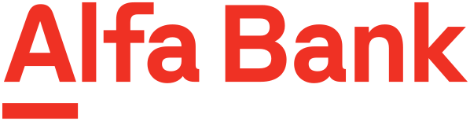
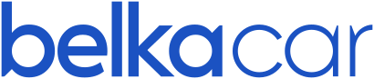

Обо мне
Продуктовый дизайнер с 14 годами опыта: от агентств и стартапов до лидеров рынка — Альфа-Банка, MAPS.ME, BelkaCar. Проектирую архитектуру и ежедневно работаю над продуктовыми задачами, участвую в формировании фич и довожу решения до реализации. Последние годы веду команды дизайнеров и выстраиваю процессы вокруг дизайна. Не боюсь неполных ТЗ: сам нахожу данные, провожу интервью и тесты, а гипотезы проверяю через MVP.
Опыт

Что делаю: продуктовый дизайн банковских сервисов одного из крупнейших частных банков России — от исследований и сценариев до макетов в дизайн-системе банка и сопровождения разработки.
Что делал: выстроил дизайн-процесс и пересобрал ключевые revenue-сценарии мобильного приложения беттинг-компании: объединил регистрацию и идентификацию в один шаг, перевёл платформы на единый UI, проработал пополнение и модальные окна на все случаи. Работал с легаси и стейкхолдерами, наставлял дизайнеров.
Что получилось: конверсия в завершённую регистрацию +48%, в первое пополнение — +44%; регистрация занимает меньше 2 минут вместо 3+.
Что делал: перепроектировал отчёты базы знаний о разработке лекарств для аналитиков и инвесторов фармкомпаний — 9 770+ препаратов, 1 700+ компаний, данные FDA и EMA. Провёл интервью с 12 аналитиками, создал дизайн-систему для данных, переделал графики, таблицы, поиск, избранное, коллекции и оповещения.
Что получилось: работа без перерыва — 41 минута вместо 18, нужный показатель находят в 3 раза быстрее, SUS вырос с 52 до 81, пустых выдач поиска — 9% вместо 38%.
Что делал: объединил пять сервисов недвижимости в одну экосистему в iOS и Android: поиск жилья, ипотека, сделка и ремонт. Собрал сквозной путь пользователя и модель коммуникации, спроектировал около 100 экранов поиска, проверял гипотезы и планировал роадмап.
Что получилось: MVP за 4 месяца, анкета ипотеки короче на 40%, retention +27%, scope MVP меньше на 35%; 36 400+ MAU, рейтинг 4,78 в App Store.
Что делал: руководил дизайном криптосервиса Parity внутри MAPS.ME — безопасное хранение и переводы денег по всему миру в реальном времени. Создал бренд с нуля, исследовал конкурентов и рынок, запустил сайт и приложения.
Что получилось: рейтинг приложений 4,7 в App Store и 4,4 в Google Play.

Что делал: переработал сайт и приложения второго по величине каршеринга — по отзывам из поддержки и результатам UX-тестов, вёл документацию для разработки.
Что получилось: рейтинг 4,6 в App Store и 4,0 в Google Play.
Ранний опыт: Revo Технологии — сценарии рассрочки на сайтах партнёров, от выбора товара до оплаты; Hyperboloid Agency — стратегия и дизайн клиентских продуктов на основе исследований; Лига Ставок — редизайн iOS- и Android-приложений крупного букмекера; LEXION development — сайты жилого девелопера после анализа конкурентов.